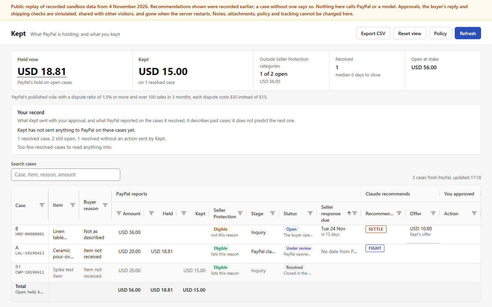
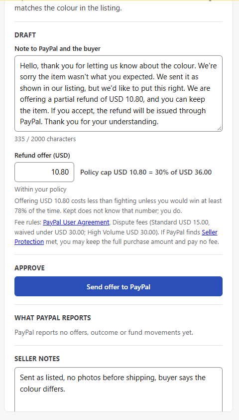
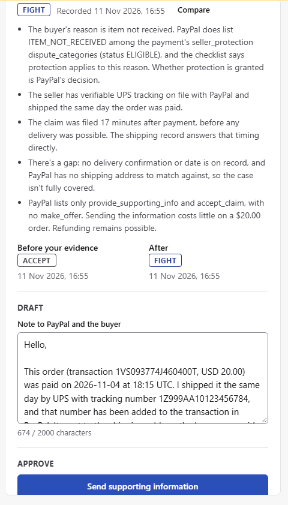

Shipping check
Enter an order id to check PayPal's Seller Protection record when you ship, and see the tracking PayPal reports.
PayPal sandbox only. Free and open source (MIT).

A 5.00 refund offer on a 20.00 inquiry; the sandbox buyer accepted; PayPal reported RESOLVED, refunded 5.00, kept 15.00.
Live eval, 9 cases x 3 runs, every check passed; it checks specific behaviours, not real-world accuracy.
Kept sent two capped offers (7.20 and 8.10); the buyer accepted both; PayPal reported both resolved; kept 16.80 of 24.00 and 18.90 of 27.00.
Kept sent supporting information with a file; PayPal's record lists the document (packing-slip.pdf, a sandbox demo document).
fund_movements entries with reason HOLD_PLACED on open disputes. What PayPal reports it is holding, with no prediction of when a hold ends.dispute_outcome.amount_refunded on resolved disputes. What PayPal reports you kept.Open cases where the buyer's reason is outside the payment's reported categories, with their disputed total. Missing categories are shown as not reported. PayPal decides whether protection applies.
Kept reads the dispute from PayPal.
Claude recommends fight, settle or accept, with reasons and what would change the call.
You edit the offer and note, then approve. Offers are capped: the cap refuses and never lowers your number.
Kept sends one call to PayPal and reads back what PayPal recorded.
The offer sits at the seller's policy cap. The break-even line comes from PayPal's published dispute fees.

The call before and after the seller's shipping notes. Kept shows both calls side by side, with Claude's reasons.

Enter an order id to check PayPal's Seller Protection record when you ship, and see the tracking PayPal reports.
Read the payment's reported status and categories alongside the buyer's reason. PayPal decides whether protection applies.
What Kept sent and what PayPal reported, with case counts. Past outcomes describe those cases, without predicting the next one.